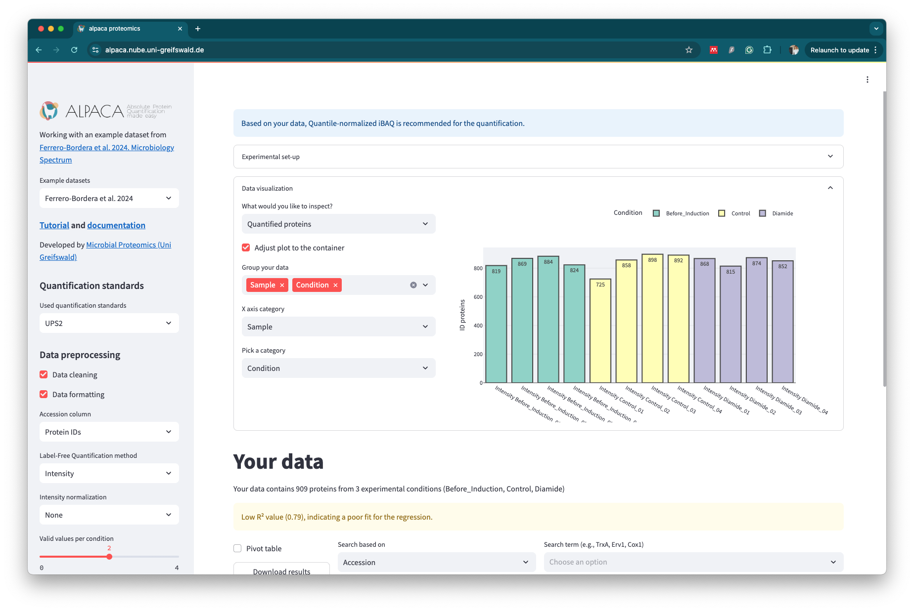

Alpaca GUI

Try the 🦙🔗 alpaca app for quick exploration of your data
Walkthrough tutorial
🎥 Watch the video tutorial
Run it locally
Check our GUI version online in the link above or run it locally using Docker:
-
Ensure Docker is Installed and Running Make sure you have Docker installed on your system and that the Docker daemon is running.
-
Clone and Build the Application
# Clone the repository
git clone https://github.com/borfebor/alpaca_app.git
# Navigate to the folder containing the cloned repository
cd alpaca_app
# Build the Alpaca app (the -t flag specifies the name of the Docker image)
docker build -t alpaca-app .
# Start the Alpaca app from the terminal
docker run -p 8501:8501 alpaca-app
- Access the Web Interface: Once the container is running, open the following link in your browser: http://localhost:8501/